In the world of data, numbers alone don’t always speak clearly. That’s where graphics in R come in - transforming raw data into visual stories that are easy to understand, analyze, and explain.
Whether you’re a beginner analyzing survey results or an advanced researcher modeling scientific data, R gives you powerful tools to make your findings visually compelling and intuitively clear.
Plot Types
Plot Type
Purpose
Histogram
See how your data is distributed
Box Plot
Summarize spread, median, and outliers
Scatter Plot
Explore relationships between variables
Bar Chart
Compare values across categories
Pie Chart
Show proportions within a whole
Line Chart
Display trends over time
Heat Map
Spot patterns in matrices or correlations
Density Plot
Smooth overview of distribution shape
Stripchart
Visualize individual data points clearly
Graphics Documentation
base::library(help = graphics)
Documentation for package 'graphics'
Information on package 'graphics'
Description:
Package: graphics
Version: 4.5.1
Priority: base
Title: The R Graphics Package
Author: R Core Team and contributors worldwide
Maintainer: R Core Team <do-use-Contact-address@r-project.org>
Contact: R-help mailing list <r-help@r-project.org>
Description: R functions for base graphics.
Imports: grDevices
License: Part of R 4.5.1
NeedsCompilation: yes
Enhances: vcd
Built: R 4.5.1; x86_64-w64-mingw32; 2025-06-13 07:48:07
UTC; windows
Index:
Axis Generic Function to Add an Axis to a Plot
abline Add Straight Lines to a Plot
arrows Add Arrows to a Plot
assocplot Association Plots
axTicks Compute Axis Tickmark Locations
axis Add an Axis to a Plot
axis.POSIXct Date and Date-time Plotting Functions
barplot Bar Plots
box Draw a Box around a Plot
boxplot Box Plots
boxplot.matrix Draw a Boxplot for each Column (Row) of a
Matrix
bxp Draw Box Plots from Summaries
cdplot Conditional Density Plots
clip Set Clipping Region
contour Display Contours
coplot Conditioning Plots
curve Draw Function Plots
dotchart Cleveland's Dot Plots
filled.contour Level (Contour) Plots
fourfoldplot Fourfold Plots
frame Create / Start a New Plot Frame
graphics-package The R Graphics Package
grconvertX Convert between Graphics Coordinate Systems
grid Add Grid to a Plot
hist Histograms
hist.POSIXt Histogram of a Date or Date-Time Object
identify Identify Points in a Scatter Plot
image Display a Color Image
layout Specifying Complex Plot Arrangements
legend Add Legends to Plots
lines Add Connected Line Segments to a Plot
locator Graphical Input
matplot Plot Columns of Matrices
mosaicplot Mosaic Plots
mtext Write Text into the Margins of a Plot
pairs Scatterplot Matrices
panel.smooth Simple Panel Plot
par Set or Query Graphical Parameters
persp Perspective Plots
pie Pie Charts
plot.data.frame Plot Method for Data Frames
plot.default The Default Scatterplot Function
plot.design Plot Univariate Effects of a Design or Model
plot.factor Plotting Factor Variables
plot.formula Formula Notation for Scatterplots
plot.histogram Plot Histograms
plot.raster Plotting Raster Images
plot.table Plot Methods for 'table' Objects
plot.window Set up World Coordinates for Graphics Window
plot.xy Basic Internal Plot Function
points Add Points to a Plot
polygon Polygon Drawing
polypath Path Drawing
rasterImage Draw One or More Raster Images
rect Draw One or More Rectangles
rug Add a Rug to a Plot
screen Creating and Controlling Multiple Screens on a
Single Device
segments Add Line Segments to a Plot
smoothScatter Scatterplots with Smoothed Densities Color
Representation
spineplot Spine Plots and Spinograms
stars Star (Spider/Radar) Plots and Segment Diagrams
stem Stem-and-Leaf Plots
stripchart 1-D Scatter Plots
strwidth Plotting Dimensions of Character Strings and
Math Expressions
sunflowerplot Produce a Sunflower Scatter Plot
symbols Draw Symbols (Circles, Squares, Stars,
Thermometers, Boxplots)
text Add Text to a Plot
title Plot Annotation
xinch Graphical Units
xspline Draw an X-spline
Genearl Parameters
Parameter
Description
ask
Logical: pause between pages of plots
bg
Background color
bty
Box type around the plot (e.g., "o", "n")
cex
Text and symbol size multiplier
cex.axis
Axis annotation size
cex.lab
Axis label size
cex.main
Main title size
cex.sub
Subtitle size
col
Default color
col.axis
Axis annotation color
col.lab
Axis label color
col.main
Main title color
col.sub
Subtitle color
crt
Text rotation (degrees)
family
Font family
fg
Foreground color
font
Font style (1=plain, 2=bold, 3=italic, 4=bold italic)
font.axis
Font for axis text
font.lab
Font for axis labels
font.main
Font for main title
font.sub
Font for subtitle
lab
Length of tick marks
las
Axis label orientation (0–3)
lend
Line end style
lheight
Line height multiplier
ljoin
Line join style
lmitre
Mitre limit for line joins
Line Parameters
Parameter
Description
lty
Line type (e.g., 1=solid, 2=dashed, etc.)
lwd
Line width multiplier
Margin and Layout Parameters
Parameter
Description
mai
Margins in inches: bottom, left, top, right
mar
Margins in lines of text
mex
Character size expansion for margins
mfcol
Fill plots column-wise in a matrix
mfrow
Fill plots row-wise in a matrix
mfg
Current plot number in matrix
new
Logical: draw new plot on top of existing
oma
Outer margins (in lines)
omd
Outer region (normalized 0–1)
pin
Plot dimensions in inches
plt
Plot region (normalized 0–1)
Axis and Tick Parameters
Parameter
Description
ps
Base font size in points
pty
Plot type ("m"=max, "s"=square)
tck
Length of tick marks
tcl
Length of tick marks in lines
xaxp, yaxp
Axis min, max, and number of ticks
xaxs, yaxs
Axis style ("r", "i", "e", etc.)
xaxt, yaxt
Axis type ("s"=standard, "n"=none)
xlog, ylog
Logical: log scale on axis
Character and Symbol Parameters
Parameter
Description
pch
Plotting character or symbol (e.g., 1–25 or char)
type
Plot type ("p", "l", "b", "o", "h", etc.)
Output and Device Parameters
Parameter
Description
xpd
Clipping: "n"=no, "s"=figure region, "u"=user
page
Logical: advance to new page (used in devices)
List All Parameters in R
To get the official documentation of all parameters and their possible values, use the help function on par, like this: help(par).
To view the current graphical settings, simply run par().
# Help on graphical parameters# help(par) # nolint
# View all current settings# par() # nolint
Datasets Documentation
base::library(help = datasets)
Documentation for package 'datasets'
Information on package 'datasets'
Description:
Package: datasets
Version: 4.5.1
Priority: base
Title: The R Datasets Package
Author: R Core Team and contributors worldwide
Maintainer: R Core Team <do-use-Contact-address@r-project.org>
Contact: R-help mailing list <r-help@r-project.org>
Description: Base R datasets.
License: Part of R 4.5.1
Built: R 4.5.1; ; 2025-06-13 07:49:34 UTC; windows
Index:
AirPassengers Monthly Airline Passenger Numbers 1949-1960
BJsales Sales Data with Leading Indicator
BOD Biochemical Oxygen Demand
CO2 Carbon Dioxide Uptake in Grass Plants
ChickWeight Weight versus age of chicks on different diets
DNase Elisa assay of DNase
EuStockMarkets Daily Closing Prices of Major European Stock
Indices, 1991-1998
Formaldehyde Determination of Formaldehyde
HairEyeColor Hair and Eye Color of Statistics Students
Harman23.cor Harman Example 2.3
Harman74.cor Harman Example 7.4
Indometh Pharmacokinetics of Indomethacin
InsectSprays Effectiveness of Insect Sprays
JohnsonJohnson Quarterly Earnings per Johnson & Johnson Share
LakeHuron Level of Lake Huron 1875-1972
LifeCycleSavings Intercountry Life-Cycle Savings Data
Loblolly Growth of Loblolly Pine Trees
Nile Flow of the River Nile
Orange Growth of Orange Trees
OrchardSprays Potency of Orchard Sprays
PlantGrowth Results from an Experiment on Plant Growth
Puromycin Reaction Velocity of an Enzymatic Reaction
Theoph Pharmacokinetics of Theophylline
Titanic Survival of passengers on the Titanic
ToothGrowth The Effect of Vitamin C on Tooth Growth in
Guinea Pigs
UCBAdmissions Student Admissions at UC Berkeley
UKDriverDeaths Road Casualties in Great Britain 1969-84
UKLungDeaths Monthly Deaths from Lung Diseases in the UK
UKgas UK Quarterly Gas Consumption
USAccDeaths Accidental Deaths in the US 1973-1978
USArrests Violent Crime Rates by US State
USJudgeRatings Lawyers' Ratings of State Judges in the US
Superior Court
USPersonalExpenditure Personal Expenditure Data
VADeaths Death Rates in Virginia (1940)
WWWusage Internet Usage per Minute
WorldPhones The World's Telephones
ability.cov Ability and Intelligence Tests
airmiles Passenger Miles on Commercial US Airlines,
1937-1960
airquality New York Air Quality Measurements
anscombe Anscombe's Quartet of 'Identical' Simple Linear
Regressions
attenu The Joyner-Boore Attenuation Data
attitude The Chatterjee-Price Attitude Data
austres Quarterly Time Series of the Number of
Australian Residents
beavers Body Temperature Series of Two Beavers
cars Speed and Stopping Distances of Cars
chickwts Chicken Weights by Feed Type
co2 Mauna Loa Atmospheric CO2 Concentration
crimtab Student's 3000 Criminals Data
datasets-package The R Datasets Package
discoveries Yearly Numbers of Important Discoveries
esoph Smoking, Alcohol and (O)esophageal Cancer
euro Conversion Rates of Euro Currencies
eurodist Distances Between European Cities and Between
US Cities
faithful Old Faithful Geyser Data
freeny Freeny's Revenue Data
gait Hip and Knee Angle while Walking
infert Infertility after Spontaneous and Induced
Abortion
iris Edgar Anderson's Iris Data
islands Areas of the World's Major Landmasses
lh Luteinizing Hormone in Blood Samples
longley Longley's Economic Regression Data
lynx Annual Canadian Lynx trappings 1821-1934
morley Michelson Speed of Light Data
mtcars Motor Trend Car Road Tests
nhtemp Average Yearly Temperatures in New Haven
nottem Average Monthly Temperatures at Nottingham,
1920-1939
npk Classical N, P, K Factorial Experiment
occupationalStatus Occupational Status of Fathers and their Sons
penguins Measurements of Penguins near Palmer Station,
Antarctica
precip Annual Precipitation in Selected US Cities
presidents Quarterly Approval Ratings of US Presidents
pressure Vapor Pressure of Mercury as a Function of
Temperature
quakes Locations of Earthquakes off Fiji
randu Random Numbers from Congruential Generator
RANDU
rivers Lengths of Major North American Rivers
rock Measurements on Petroleum Rock Samples
sleep Student's Sleep Data
stackloss Brownlee's Stack Loss Plant Data
state US State Facts and Figures
sunspot.month Monthly Sunspot Data, from 1749 to "Present"
sunspot.year Yearly Sunspot Data, 1700-1988
sunspots Monthly Sunspot Numbers, 1749-1983
swiss Swiss Fertility and Socioeconomic Indicators
(1888) Data
treering Yearly Tree-Ring Data, -6000-1979
trees Diameter, Height and Volume for Black Cherry
Trees
uspop Populations Recorded by the US Census
volcano Topographic Information on Auckland's Maunga
Whau Volcano
warpbreaks The Number of Breaks in Yarn during Weaving
women Average Heights and Weights for American Women
Initial Exploration
utils::head(x = penguins, n =5L)
A data.frame: 5 × 8
species
island
bill_len
bill_dep
flipper_len
body_mass
sex
year
<fct>
<fct>
<dbl>
<dbl>
<int>
<int>
<fct>
<int>
1
Adelie
Torgersen
39.1
18.7
181
3750
male
2007
2
Adelie
Torgersen
39.5
17.4
186
3800
female
2007
3
Adelie
Torgersen
40.3
18.0
195
3250
female
2007
4
Adelie
Torgersen
NA
NA
NA
NA
NA
2007
5
Adelie
Torgersen
36.7
19.3
193
3450
female
2007
utils::str(object = penguins)
'data.frame': 344 obs. of 8 variables:
$ species : Factor w/ 3 levels "Adelie","Chinstrap",..: 1 1 1 1 1 1 1 1 1 1 ...
$ island : Factor w/ 3 levels "Biscoe","Dream",..: 3 3 3 3 3 3 3 3 3 3 ...
$ bill_len : num 39.1 39.5 40.3 NA 36.7 39.3 38.9 39.2 34.1 42 ...
$ bill_dep : num 18.7 17.4 18 NA 19.3 20.6 17.8 19.6 18.1 20.2 ...
$ flipper_len: int 181 186 195 NA 193 190 181 195 193 190 ...
$ body_mass : int 3750 3800 3250 NA 3450 3650 3625 4675 3475 4250 ...
$ sex : Factor w/ 2 levels "female","male": 2 1 1 NA 1 2 1 2 NA NA ...
$ year : int 2007 2007 2007 2007 2007 2007 2007 2007 2007 2007 ...
base::summary(object = penguins)
species island bill_len bill_dep
Adelie :152 Biscoe :168 Min. :32.10 Min. :13.10
Chinstrap: 68 Dream :124 1st Qu.:39.23 1st Qu.:15.60
Gentoo :124 Torgersen: 52 Median :44.45 Median :17.30
Mean :43.92 Mean :17.15
3rd Qu.:48.50 3rd Qu.:18.70
Max. :59.60 Max. :21.50
NA's :2 NA's :2
flipper_len body_mass sex year
Min. :172.0 Min. :2700 female:165 Min. :2007
1st Qu.:190.0 1st Qu.:3550 male :168 1st Qu.:2007
Median :197.0 Median :4050 NA's : 11 Median :2008
Mean :200.9 Mean :4202 Mean :2008
3rd Qu.:213.0 3rd Qu.:4750 3rd Qu.:2009
Max. :231.0 Max. :6300 Max. :2009
NA's :2 NA's :2
Attaching package: 'dplyr'
The following objects are masked from 'package:stats':
filter, lag
The following objects are masked from 'package:base':
intersect, setdiff, setequal, union
A data.frame: 3 × 2
species
n
<fct>
<int>
Adelie
152
Gentoo
124
Chinstrap
68
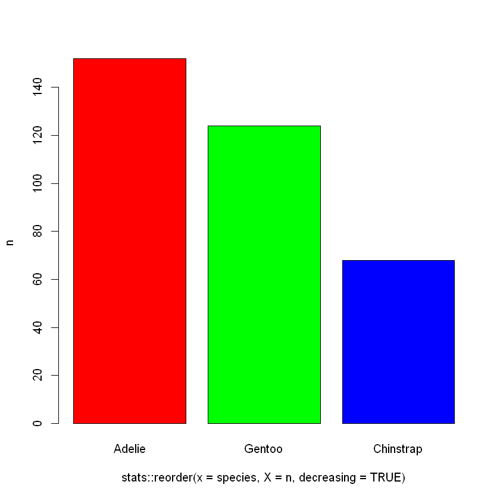
To save a figure, just wrap it with png() and dev.off().
A pie chart is a circular graph divided into slices (or sectors), where each slice represents a proportion or percentage of a whole. The entire circle represents 100% of the data.
Each slice’s size is proportional to the value it represents.
Pie charts are mainly used to:
Show proportions or relative percentages of categories within a whole.
Provide a quick visual comparison between parts.
Illustrate distribution in a simple, intuitive format.
graphics::pie(x = base::table(penguins$year),col = base::c("red", "green", "blue"),main ="Distribution of Penguins by Year")
base::as.data.frame(table(penguins$year))
A data.frame: 3 × 2
Var1
Freq
<fct>
<int>
2007
110
2008
114
2009
120
base::with(data =as.data.frame(table(penguins$year)),expr = graphics::pie(x = Freq,labels = Var1,col = grDevices::rainbow(n =3),main ="Distribution of Penguin by Year" ))
df_year <- base::as.data.frame(base::table(penguins$year))base::names(df_year) <- base::c("year", "count")df_yeargraphics::pie(x = df_year$count,labels = df_year$year,col = grDevices::rainbow(n =3),main ="Distribution of Penguin by Year")
A data.frame: 3 × 2
year
count
<fct>
<int>
2007
110
2008
114
2009
120
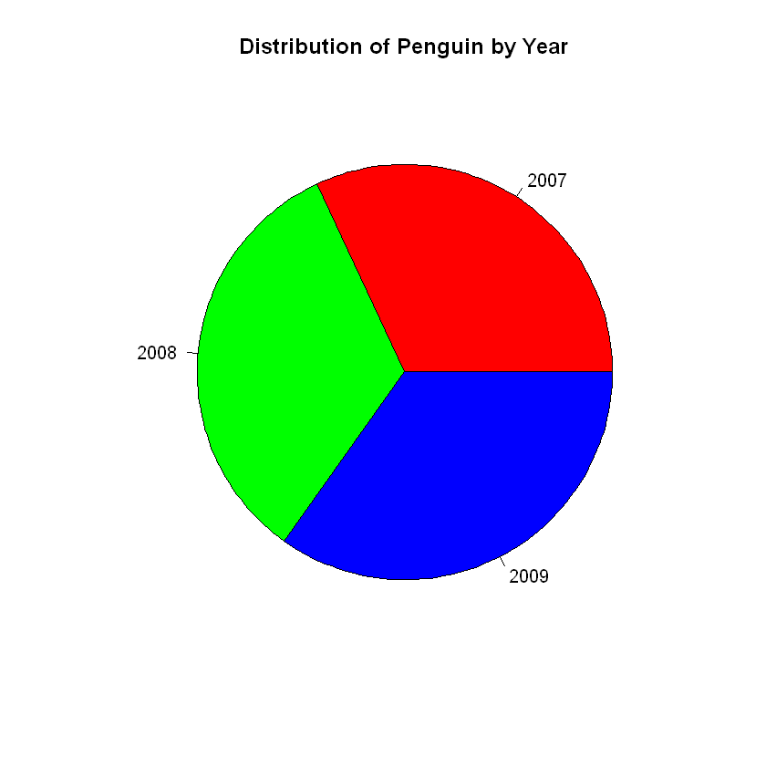
# Calculate counts and percentagesyear_counts <- base::table(penguins$year)year_perc <- base::round(100* year_counts / base::sum(year_counts), 1)# Create labels with counts and percentageslabels <- base::paste( base::names(year_counts),"\n", year_counts," (", year_perc,"%)",sep ="")# Plot pie chart with labelsgraphics::pie(x = year_counts,main ="Distribution of Penguins by Year",col = base::c("red", "green", "blue"),labels = labels)
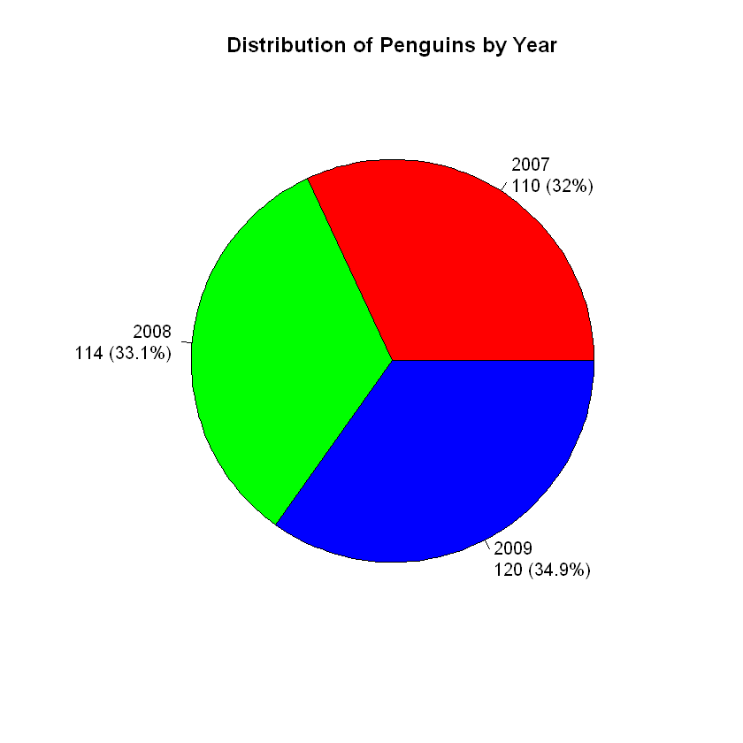
Histogram
A histogram is a type of bar graph that displays the distribution of a continuous variable. It shows how many data points fall into ranges of values, called bins.
Unlike bar charts (used for categorical data), histograms are for numerical, continuous data.
Histograms are used to:
Show the shape of a distribution (e.g., normal, skewed, uniform)
Visualize frequency of values within intervals
Identify central tendency, spread, skewness, and outliers
Compare the distribution of a variable across different groups
graphics::hist(x = penguins$bill_len,main ="Distribution of Penguin Bill Length",xlab ="Bill Length",ylab ="Binning Count",col = grDevices::rainbow(n =15))
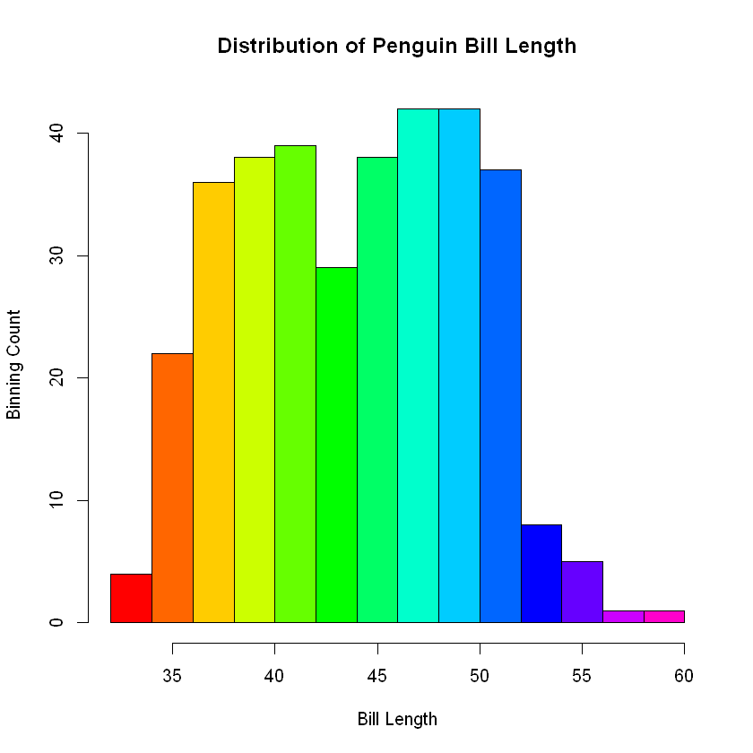
base::with(data = penguins,expr = graphics::hist(x = bill_len,main ="Distribution of Penguin Bill Length",xlab ="Bill Length",ylab ="Binning Count",col = grDevices::rainbow(n =15) ))
A box plot (also called a box-and-whisker plot) is a statistical graph that summarizes a dataset using five key summary statistics:
Minimum (excluding outliers)
First Quartile (Q1) – 25th percentile
Median (Q2) – 50th percentile
Third Quartile (Q3) – 75th percentile
Maximum (excluding outliers)
Outliers are also often shown as individual points.
Box plots are used to:
Visualize the spread and center of a dataset.
Compare distributions between groups.
Identify skewness, symmetry, and outliers in data.
graphics::boxplot(x = penguins$bill_dep,main ="Distribution of Penguins Bill Depth",xlab ="Bill Depth",ylab ="Distribution",border ="blue",col ="green",lwd =3)
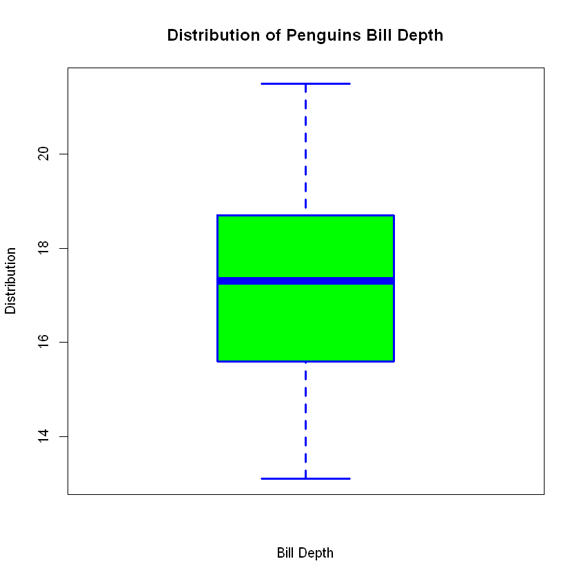
base::with(data = penguins,expr = graphics::boxplot(x = bill_dep,main ="Distribution of Penguins Bill Depth",xlab ="Bill Depth",ylab ="Distribution",border ="blue",col ="green",lwd =3 ))
bp <- graphics::boxplot(x = penguins$bill_dep,main ="Distribution of Penguins Bill Depth",xlab ="Bill Depth",ylab ="Distribution",border ="red",col ="pink",lwd =3)# Extract the five-number summaryfive_nums <- bp$stats# Add labels for each of the five statsgraphics::text(x =1.2, # position to the right of boxploty = five_nums,labels = base::c("Min", "Q1", "Median", "Q3", "Max"),pos =4, # label to the right of pointscol = grDevices::rainbow(n =5),cex =1.25)# Optional: Show numeric values as wellgraphics::text(x =0.8, # position to the left of boxploty = five_nums,labels = base::round(x = five_nums, digits =2),pos =2, # label to the leftcol = grDevices::rainbow(n =5),cex =1.25)
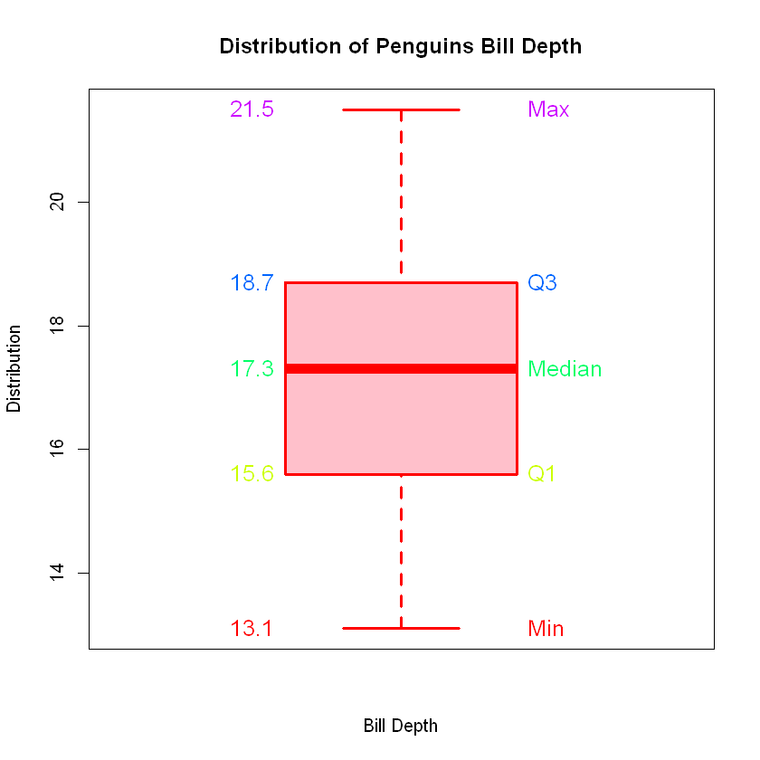
Strip Chart
A stripchart (also called a strip plot) is a simple one-dimensional scatter plot used to display individual data points for a single variable. Each data point is represented as a dot along a line, helping visualize the distribution of values.
Stripcharts are used to:
Show individual observations (especially for small datasets)
Compare distributions between groups
Visualize overlapping or repeated values
Provide a simpler alternative to box plots or histograms when sample size is small
Call:
density.default(x = penguins$flipper_len, na.rm = TRUE)
Data: penguins$flipper_len (342 obs.); Bandwidth 'bw' = 3.94
x y
Min. :160.2 Min. :4.094e-06
1st Qu.:180.8 1st Qu.:1.892e-03
Median :201.5 Median :1.291e-02
Mean :201.5 Mean :1.208e-02
3rd Qu.:222.2 3rd Qu.:1.902e-02
Max. :242.8 Max. :3.185e-02
A density plot is a smoothed version of a histogram that shows the estimated distribution of a continuous variable. It uses kernel density estimation (KDE) to create a continuous curve representing the probability density of the data.
Density plots are used to:
Show the distribution shape of a continuous variable
Compare distributions across different groups
Visualize skewness, peaks, spread, and multimodal distributions
Provide a smoother, more readable alternative to histograms
base::plot(x = stats::density(x = penguins$flipper_len,na.rm =TRUE ),main ="Kernel Density of Flipper Length",xlab ="Flipper Length",ylab ="Density",col ="blue",lwd =3)
graphics::boxplot(formula = body_mass ~ island,data = penguins,main ="Body Mass by Species",xlab ="Species",ylab ="Body Mass",col = base::c("tomato", "skyblue", "lightgreen"),lwd =3)graphics::stripchart(x = body_mass ~ island, # body mass by islanddata = penguins, # the data setmethod ="jitter", # method of strip plotjitter =0.3, # jitter sizevertical =TRUE, # prefer vertical orientationpch =21, # type of point shapecex =1.5, # scale of point sizebg = grDevices::adjustcolor( # color of point fillcol = grDevices::rainbow(n =7),alpha.f =0.5 ),lwd =1.5, # scale of point stroke/bordercol = grDevices::adjustcolor( # color of point bordercol ="black",alpha.f =0.5 ),main ="Body Mass by Species", # titlexlab ="Species", # x-axis labelylab ="Body Mass", # y-axis labelat = base::c(1, 2, 3), # corresponding to the position of boxplotadd =TRUE# on the sample figure)
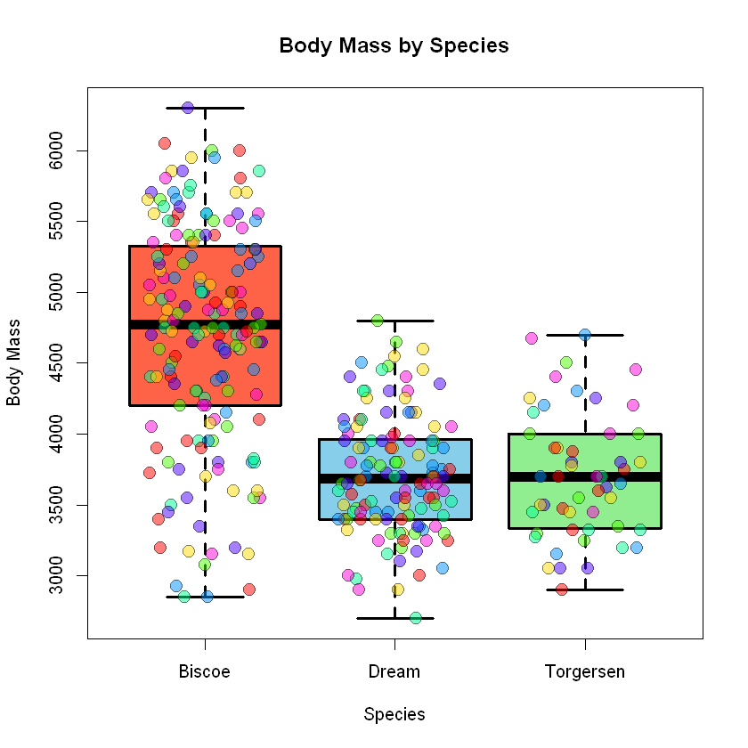
# Set larger bottom margin before plotting (bottom, left, top, right)# Increase bottom margin (default c(5, 4, 4, 2))graphics::par(mar = base::c(10, 5, 4, 2))graphics::boxplot(formula = body_mass ~ base::interaction(sex, species),data = penguins,main ="Body Mass by Sex and Species",xlab ="", # suppress x-axis labelylab ="Body Mass",col = grDevices::rainbow(n =2),lwd =3, # line widthlas =2# labels alignment style 2 (vertical))# Move xlab away from tick labels by margin textgraphics::mtext("Sex and Species", side =1, line =8)
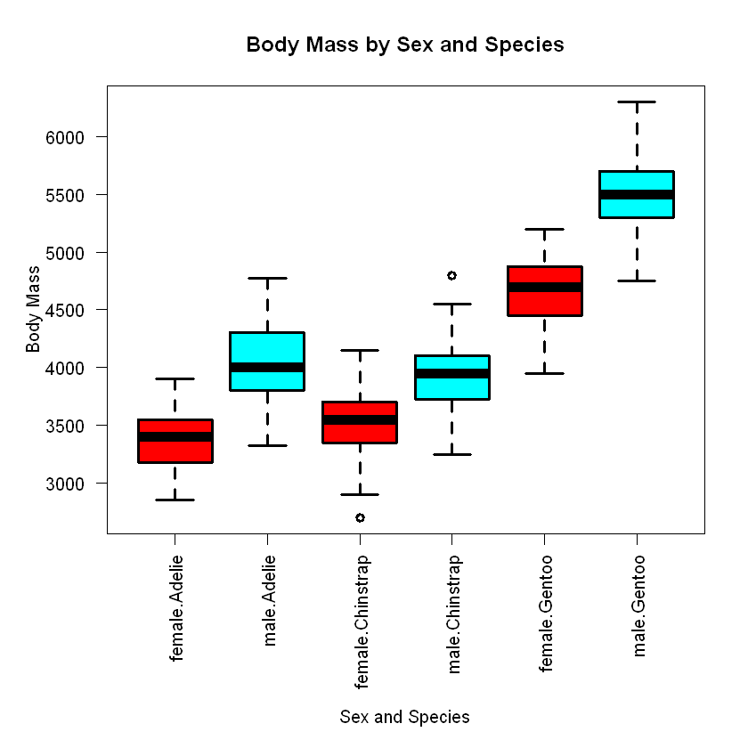
Scater Plot
A scatter plot is a graph that shows the relationship between two numerical (continuous) variables using dots. Each dot represents a single data point, positioned according to its values on the x and y axes.
Scatter plots are used to:
Visualize relationships or correlations between two variables
Detect patterns, trends, or clusters
Identify outliers
Support regression analysis and predictive modeling
base::plot(x = penguins$flipper_len,y = penguins$body_mass,main ="Flipper Length vs Body Mass",xlab ="Flipper Length",ylab ="Body Mass",col ="blue", # stroke colorbg ="cyan", # fill colorpch =21, # point stylecex =2, # size multiplierlwd =2, # stroke line width)
base::with(data = penguins,expr = base::plot(x = flipper_len,y = body_mass,main ="Flipper Length vs Body Mass",xlab ="Flipper Length",ylab ="Body Mass",col ="blue", # stroke colorbg ="cyan", # fill colorpch =21, # point stylecex =2, # size multiplierlwd =2, # stroke line width ))
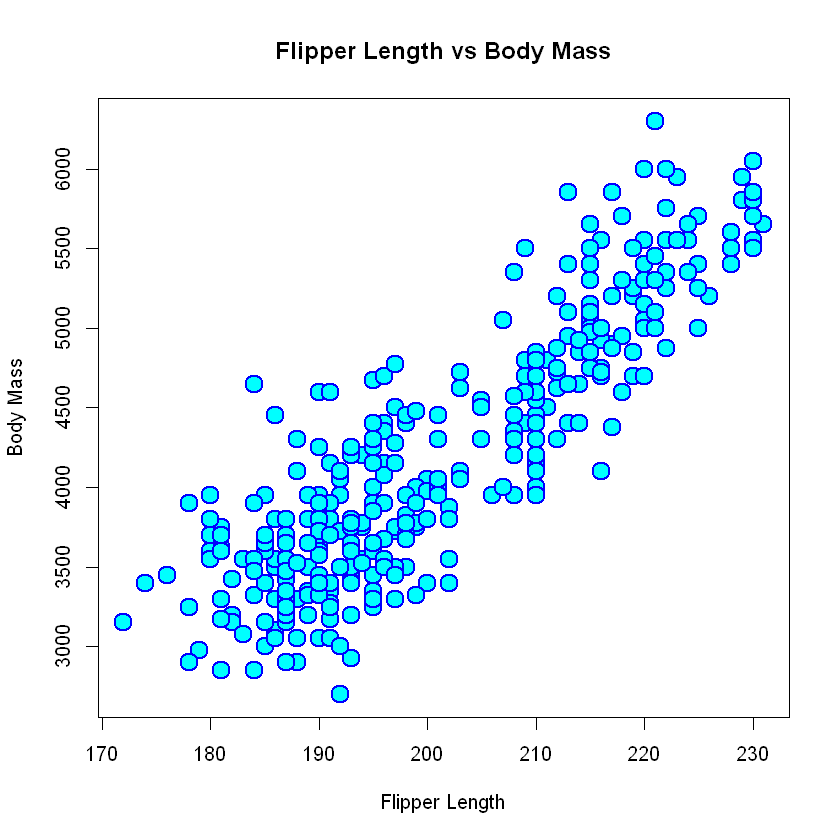
# Remove rows with missing values for the two variablesclean_data <- stats::na.omit(penguins[, base::c("flipper_len", "body_mass")])# Scatter plotbase::plot( clean_data$flipper_len, clean_data$body_mass,main ="Flipper Length vs Body Mass with Regression Line",xlab ="Flipper Length (mm)",ylab ="Body Mass (g)",pch =21,bg ="green",col ="blue",cex =2,lwd =2)# Fit linear modellm_fit <- stats::lm(formula = body_mass ~ flipper_len, data = clean_data)# Add regression line to the plotgraphics::abline(a = lm_fit, col ="red", lwd =4)
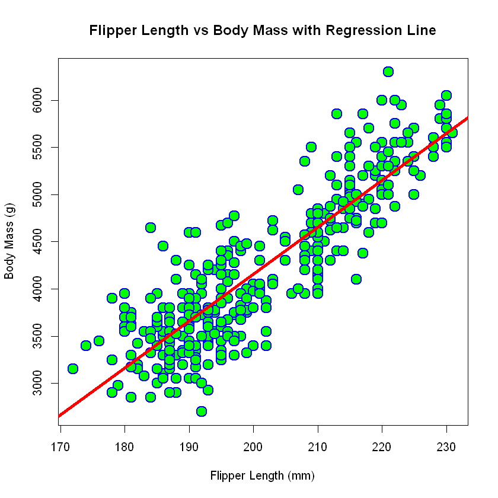
# Clean data: remove NAsselected_data <- penguins[, base::c("flipper_len", "body_mass", "species")]clean_data <- stats::na.omit(object = selected_data)# Assign a color to each speciesspecies_colors <- base::c("Adelie"="red", "Chinstrap"="green", "Gentoo"="blue") # nolintpoint_colors <- species_colors[clean_data$species]# Change some parametersgraphics::par(mar = base::c(5, 5, 5, 5))# Plotbase::plot(x = clean_data$flipper_len,y = clean_data$body_mass,main ="Flipper Length vs Body Mass by Species",xlab ="Flipper Length (mm)",ylab ="Body Mass (g)",col ="black", # stroke or borderbg = point_colors, # fill color by speciespch =21,cex =2,lwd =2)# Add legendgraphics::legend(x ="topleft",title ="Species",legend = base::names(species_colors),pch =21,pt.bg = species_colors,pt.cex =2)
A heat map is a graphical representation of data where values are represented by colors. It is especially useful for visualizing matrices or two-dimensional data to show patterns, correlations, or intensity levels across rows and columns.
Heat maps are used to:
Visualize large datasets or correlation matrices
Identify patterns, trends, or outliers
Compare values across two categorical axes
Present intensity or frequency in an easy-to-understand visual form
A line plot (also called a line graph) is a type of chart that displays information as a series of data points (dots) connected by straight lines. It is commonly used to visualize trends over time or to show the relationship between two continuous variables.
Line plots are used to:
Show trends over time.
Compare changes across categories.
Identify patterns or cycles.
Spot anomalies.
# Base R plotbase::plot(x = df$date,y = df$passengers,type ="l",lwd =3,main ="Passengers Trend",xlab ="Date",ylab ="Passengers")
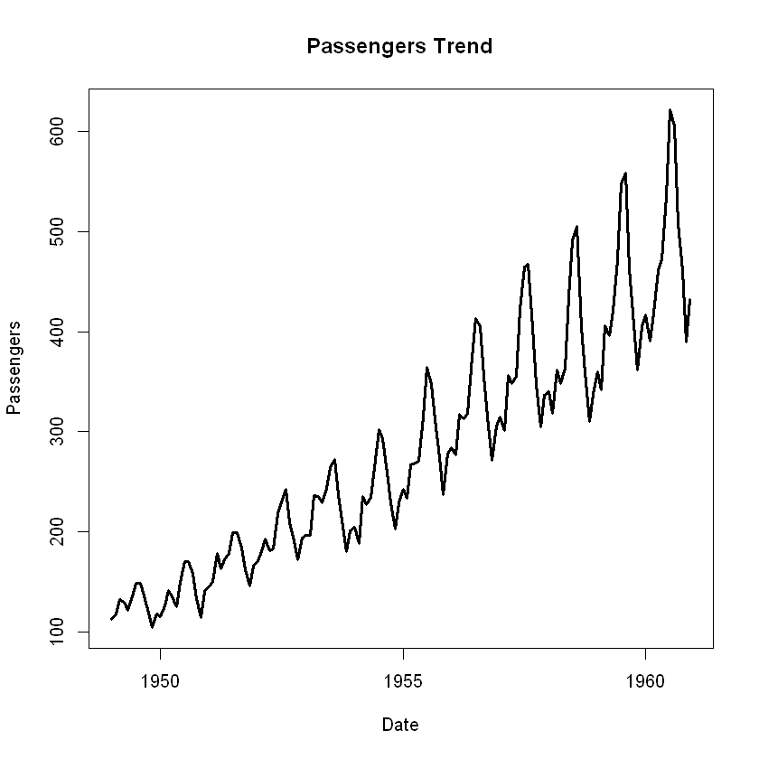
# Set up a 2-column layout for the facets (7 years -> 4 rows, 2 cols)graphics::par(mfrow = base::c(6, 2),mar = base::c(2, 2, 1, 1)) # minimal margins# Get unique yearsyears <- base::unique(df$year)# Loop over years and plot each in its own panelfor (yr in years) { dat <- base::subset(df, year == yr) base::plot(dat$date, dat$passengers,type ="l",xlab ="",ylab ="",main = yr,col ="black",lwd =3 )}
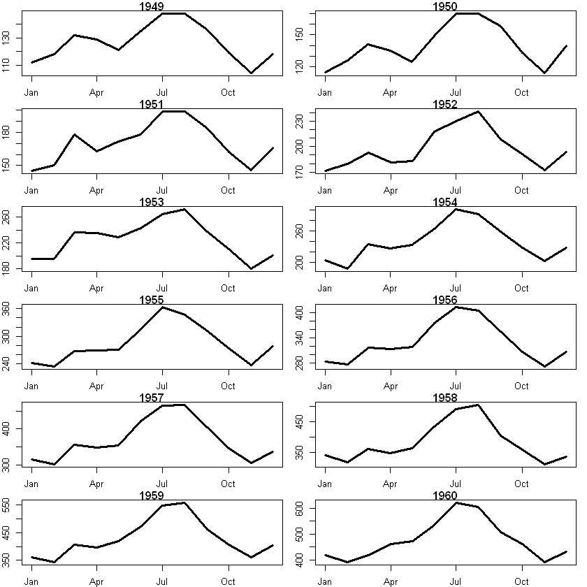
# Set up layout: 3 columns, enough rows for 12 monthsgraphics::par(mfrow = base::c(4, 3),mar = base::c(2, 2, 2, 1)) # minimal margins# Get unique months (in order)months <- base::levels(df$month)# Loop through months and create a scatter plot for eachfor (m in months) { dat <- base::subset(df, month == m) base::plot(dat$year, dat$passengers,main = m,xlab ="", ylab ="",pch =19, col ="black", cex =2 )}
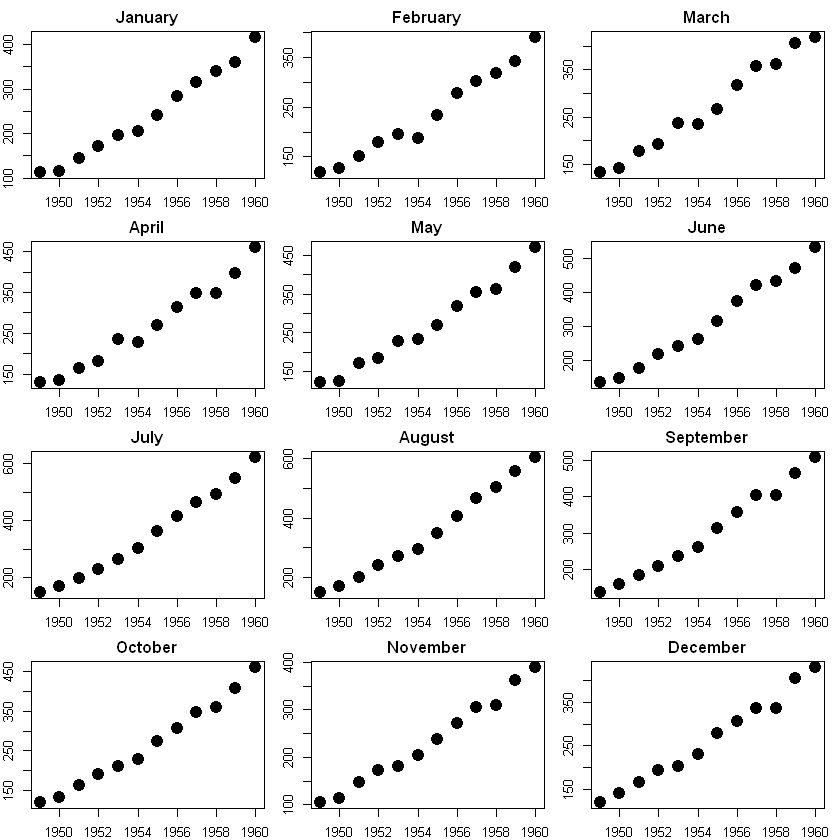
avg_year <- stats::aggregate(passengers ~ year, data = df, FUN = mean)avg_year
A data.frame: 12 × 2
year
passengers
<dbl>
<dbl>
1949
126.6667
1950
139.6667
1951
170.1667
1952
197.0000
1953
225.0000
1954
238.9167
1955
284.0000
1956
328.2500
1957
368.4167
1958
381.0000
1959
428.3333
1960
476.1667
graphics::barplot(formula = passengers ~ year,data = avg_year,col = grDevices::rainbow(n =12),las =2, # Rotate x-axis labels for readabilityxlab ="Year",ylab ="Average Passengers",main ="Average Air Passengers by Year")
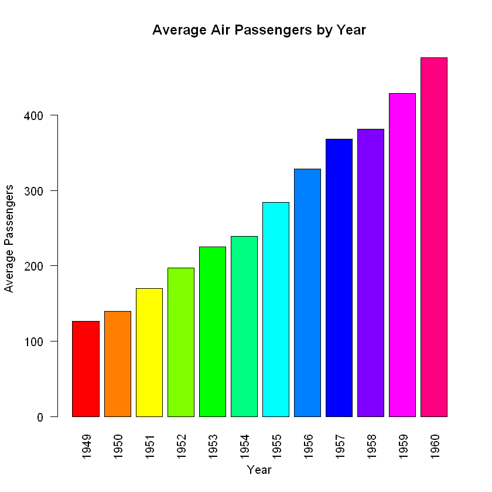
graphics::barplot(height = avg_year$passengers,names.arg = avg_year$year,col = grDevices::rainbow(n = base::nrow(avg_year)),las =2, # Rotate x-axis labels for readabilityxlab ="Year",ylab ="Average Passengers",main ="Average Air Passengers by Year")
avg_month <- stats::aggregate(x = passengers ~ month, data = df, FUN = mean)avg_month
A data.frame: 12 × 2
month
passengers
<fct>
<dbl>
January
241.7500
February
235.0000
March
270.1667
April
267.0833
May
271.8333
June
311.6667
July
351.3333
August
351.0833
September
302.4167
October
266.5833
November
232.8333
December
261.8333
graphics::barplot(formula = passengers ~ month,data = avg_month,col = grDevices::rainbow(12),las =2,xlab ="Month",ylab ="Average Number of Passengers",main ="Average Number of Passengers by Month")
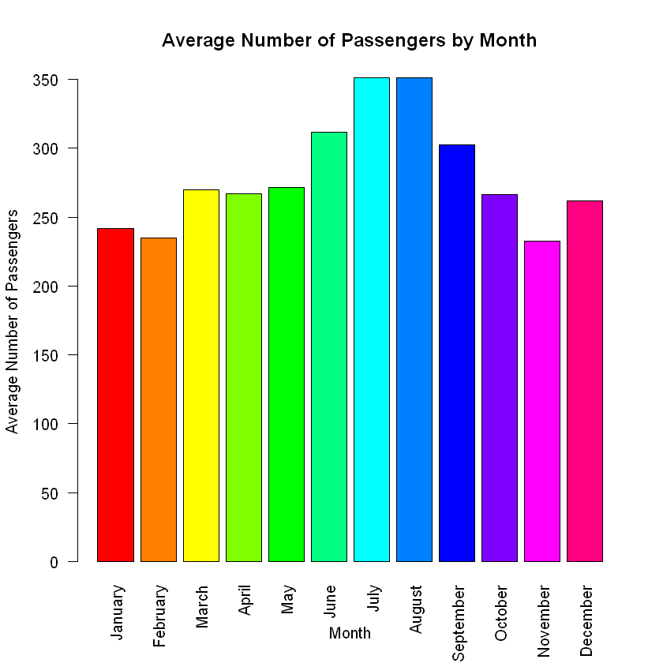
# Convert AirPassengers to data frame with year, month, and passengersbase::library(package = tibble)base::library(package = dplyr)base::library(package = lubridate)df <- tibble::tibble(year = base::floor(stats::time(AirPassengers)),month = stats::cycle(AirPassengers),passengers = base::as.numeric(AirPassengers)) %>% dplyr::mutate(date = lubridate::make_date(year = year, month = month, day =01),month = lubridate::month(x = date, label =TRUE, abbr =FALSE) )utils::str(df)
Attaching package: 'lubridate'
The following objects are masked from 'package:base':
date, intersect, setdiff, union